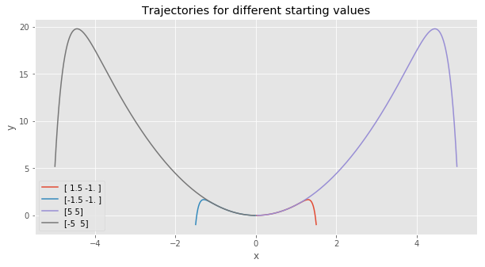
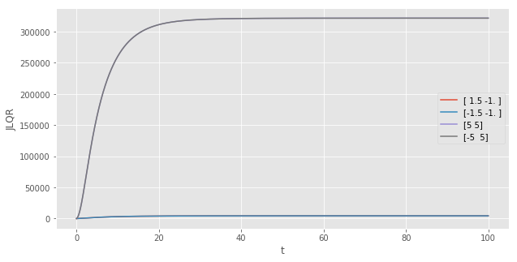
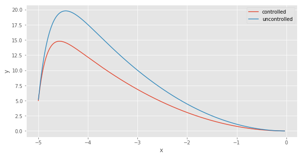
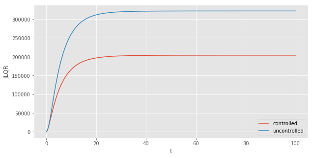

The two main goals of this blog post is to introduce what the linear–quadratic regulator (LQR) framework is and to show how to solve LQR problems using Python. The LQR is concerned with operating a dynamic system (a rocket, a car, the economy, etc.) at minimum cost.
In this blog post you will learn
- what the LQR framework is
- how to simulate forward an ordinary differential equation using scipy
- how to solve for the optimal control using the Python Control Systems Library
The Jupyter notebook with the code used to generate this blog post can be found here
I. The LQR framework in a nutshell
Many natural phenomena naturally lead to differential equations. A differential equation is an equation in which the rate of the change of a variable ($\frac{d}{dt} x$) is a function its state $x$. The unknown is a function satisfying both the differential equation and an initial value. For instance, a simple model of the spread of the Covid-19 can be written as a system of differential equations (see for instance the SIR model):
$$ \frac{d}{dt} \boldsymbol{x} = f(\boldsymbol{x},t) $$
The LQR theory studies a special case of the above problem. It focuses on problems where the function $f(\boldsymbol{x},t)$ is linear:
$$ \frac{d}{dt} \boldsymbol{x} = A \boldsymbol{x} $$
The equation above is a “passive” one. We simply observe the trajectory of $\boldsymbol{x}$ and there is nothing we can do about it. The LQR framework is based on the idea that an observer may want to change the trajectory of the system by exerting a control on $\boldsymbol{x}$. In the case of the spread of the Covid-19, the government may want to limit the number of new cases. When considering the economy, a central bank may want to control the interest rate to reach its inflation target. In the case of the SpaceX, the engineers may want to stabilize the rocket so that it does not explode when trying to land back on Earth.

In the LQR framework, the controller wants to stabilize the system to reach one of its steady-state values, defined by:
$$ \boldsymbol{x_{ss}} = A \boldsymbol{x_{ss}} $$
We need to take into consideration the impact that the controller has on the system. Let us add the control, denoted by $u$, to the uncontrolled system from above:
$$ \frac{d}{dt} \boldsymbol{x} = A \boldsymbol{x} + B \boldsymbol{u} $$
where $B$ is a matrix capturing the idea that the controller could only control some elements of $\boldsymbol{x}$.
However, there is no free lunch. In order to stabilize the system, the controller needs to pay a cost. Going back to our rocket example, some fuel is burnt in order to stabilize the trajectory of the rocket. The LQR is based on a cost function that is quadratic. This quadratic assumption simplifies the algebra substantially and captures the intuitive idea that doubling the effort actually costs four times more, not two times more.
Let us assume that the steady state of the system is $\boldsymbol{0}$. This is without loss of generality, because we can rewrite the system as a deviation from its steady-state value $\boldsymbol{\tilde{x}} \equiv \boldsymbol{x} - \boldsymbol{x_{ss}}$, in which case the steady-state is reached for $\boldsymbol{\tilde{x}} = \boldsymbol{0}$.
To capture the cost of stabilizing the system, let us use the letter $J$. $J$ captures two types of cost. Firstly, the controller dislikes when the system is not at its steady-state. In the equation below, this type of cost is captured by the matrix $Q$. Secondly, the controller dislikes spending energy to control the system. This second type of cost is captured by the matrix $R$:
$$ J = \int_{0}^{\infty} \boldsymbol{x’}(t) Q \boldsymbol{x}(t) + \boldsymbol{u’}(t) R \boldsymbol{u}(t) dt $$
A beautiful result from the LQR theory is that the optimal control from the controller is simply a linear function of the current state of the system:
$$ \boldsymbol{u} = - C \boldsymbol{x}$$
When the system is controlled optimally, the equation governing the evolution of the system writes:
$$ \frac{d}{dt} \boldsymbol{x} = A \boldsymbol{x} - B C \boldsymbol{x} $$
II. Simulating forward an ordinary differential equation in Python
Having summarized what the LQR framework is, we can now give an illustration of how it works using a simple example using Python. For what follows, you will need the following packages:
import os
import matplotlib.pyplot as plt
plt.style.use('ggplot')
%matplotlib inline
import numpy as np
from control.matlab import * # MATLAB-like functions
#to solve ODE
from scipy import integrate
#show the version of Python I am using:
!python3 --version
Python 3.5.2
Let’s study optimal control for the following differential equation:
$$\begin{cases} \frac{d}{dt} x =\mu x \\ \frac{d}{dt} y = \lambda (y - x^2) \end{cases}$$
Two observations on this dynamical system. Firstly, the system is not linear, but we will see how to deal with that in a minute. Secondly, by eyeballing the equation, it is easy to see that when $\mu < 1$ and $\lambda < 1$, the unique fixed point is
$$ \begin{pmatrix} x_{SS} \\ y_{SS} \end{pmatrix} = \begin{pmatrix} 0 \\ 0 \end{pmatrix} $$
We can convince ourselves by simulating forward the trajectory of the system using different starting values.
Let’s notice that the system can be written as a linear one, plus a part that is nonlinear:
$$ \frac{d}{dt} \begin{pmatrix} x \\ y \end{pmatrix} = \begin{pmatrix} \mu & 0 \\ 0 & \lambda \end{pmatrix} \begin{pmatrix} x \\ y \end{pmatrix} + \begin{pmatrix} O \\ - \lambda x^2 \end{pmatrix} $$
$$ \frac{d}{dt} \begin{pmatrix} x \\ y \end{pmatrix} = A \begin{pmatrix} x \\ y \end{pmatrix} + \begin{pmatrix} O \\ - \lambda x^2 \end{pmatrix}$$
The following block of code defines the parameter values, the matrix A for the linear part of the differential equation and the matrix B specifying that the controller can only act on x. We also specify the time span during which we want to simulate forward the trajectories:
# Parameters and matrices A and B:
mu = -0.05
llambda = -1.0
A = np.array([[mu, 0], [0, llambda]])
B = np.array([[0], [1]])
# Time span
t0, t1 = 0, 100 # start and end
t = np.arange(t0, t1, 0.01)
A clean way to simulate forward the trajectory is to define a function that return the evolution of the system:
# Function that defines the dynamic system:
def vdp0(t, y):
# linear part + nonlinear part:
x = A.dot(y) + np.array([0, -llambda*(y[0]**2)])
return x
We then define 4 different starting values and simulate forward the system using the scipy.integrate toolkit:
# Set of starting values:
y0A = np.array([1.5, -1])
y0B = np.array([-1.5, -1])
y0C = np.array([5, 5])
y0D = np.array([-5, 5])
# To store the different trajectories
list_y = []
# Method for the ODE:
# This is an explicit runge-kutta method of order (4)5 due to Dormand & Prince
integrator = "dopri5"
# Loop over the different starting values and calculate trajectories:
for y0 in [y0A, y0B, y0C,y0D]:
# initialize an array to store the solution
y = np.zeros((len(t), len(y0))) # array for solution
r0 = integrate.ode(vdp0).set_integrator(integrator)
r0.set_initial_value(y0, t0) # initial values
for i in range(1, t.size):
y[i, :] = r0.integrate(t[i]) # get one more value, add it to the array
if not r0.successful():
raise RuntimeError("Could not integrate")
# append the list of solution
list_y.append(y)
We can then plot the trajectories we just calculated on a same graph using matplotlib:
# Plot the different paths:
fig, ax = plt.subplots(figsize=(10, 5))
for index,y0 in enumerate([y0A, y0B, y0C, y0D]):
ax.plot(list_y[index][1:-1, 0], list_y[index][1:-1, 1], label = str(y0))
plt.xlabel("x")
plt.ylabel("y")
plt.title("Trajectories for different starting values")
plt.legend()
plt.show()

From the graph, we see that $y$ moves very quickly to the parabola defined by $y = x^2$. Then, the system slowly converges towards $(0,0)$, moving along the same parabola.
Before moving to the optimal control of the system, let us calculate the total cost $J$ of letting the system converging naturally to its steady state value:
# Store the cost associated with each starting value:
list_cost = []
for y in list_y:
JLQR = np.cumsum( np.square(y[:, 0]) + np.square(y[:, 1]) )
# append the list of solution
list_cost.append(JLQR)
The next plot shows the cumulative cost as time passes. The further away the starting value is from the steady-state, the higher the cost. We also see that because the cost function treats negative and positive deviations from the steady state the same way (because deviations are squared), the cost for the starting values (1.5, -1) and (-1.5, -1) are the same. The same observation holds for (5, 5) and (-5, 5).
# Plot the cost associated with each starting value:
fig, ax = plt.subplots(figsize=(10, 5))
for JLQR, y0 in zip(list_cost,[y0A, y0B, y0C, y0D]):
plt.plot(t, JLQR, label = str(y0))
plt.xlabel("t")
plt.ylabel("JLQR")
plt.legend()
plt.show()

III. Solving for the optimal control
Let’s first define the matrices Q and R, before solving for the optimal control matrix $C$ using the lqr function from the Python Control Systems Library
R = np.array([1])
Q = np.eye(2)
# Solve for C:
(C, X, E) = lqr(A, B, Q, R)
print("Feedback matrix C : {}".format(C))
Feedback matrix C : [[0. 0.41421356]]
We can now proceed as previously to simulate forward the differential equation. The only difference is that
now we have to take into account the optimal control applied each period on the system. The optimal control is
taken into consideration in the function vdp1(t, y):
def vdp1(t, y):
# Ay - B*X*y + Cy
x = A.dot(y) - np.matmul(B,C).dot(y)
return x + np.array([0, -llambda*(y[0]**2)])
y0 = [-5, 5] # initial value
y = np.zeros((len(t), len(y0))) # array for solution
y[0, :] = y0
r = integrate.ode(vdp1).set_integrator(integrator)
r.set_initial_value(y0, t0) # initial values
for i in range(1, t.size):
y[i, :] = r.integrate(t[i]) # get one more value, add it to the array
if not r.successful():
raise RuntimeError("Could not integrate")
We can now compare the controlled trajectory (in red) to the uncontrolled trajectory (in blue):
fig, ax = plt.subplots(figsize=(10, 5))
plt.plot(y[:, 0], y[:, 1], label = "controlled")
plt.plot(list_y[index][1:-1, 0], list_y[index][1:-1, 1], label = "uncontrolled")
plt.xlabel("x")
plt.ylabel("y")
plt.legend()
plt.show()

With the controlled trajectory, the deviation of $y$ from its steady state value is less extreme. The system converges to $(0,0)$ on a different parabola. As expected, controlling the system with the optimal controller is less costly than letting the system evolve uncontrolled:
JLQR = np.cumsum( np.square(y[:, 0]) + np.square(y[:, 1]) + np.square(np.matmul(C, y.T)) ).T
fig, ax = plt.subplots(figsize=(10, 5))
plt.plot(t, JLQR, label = "controlled")
plt.plot(t, list_cost[3], label = "uncontrolled")
plt.xlabel("t")
plt.ylabel("JLQR")
plt.legend()
plt.show()

IV. What about $-\lambda x^2$? Linearizing the nonlinear system
$$ \frac{d}{dt} \begin{pmatrix} x \\ y \end{pmatrix} = \begin{pmatrix} \mu & 0 \\ 0 & \lambda \end{pmatrix} \begin{pmatrix} x \\ y \end{pmatrix} + \begin{pmatrix} O \\ - \lambda x^2 \end{pmatrix} $$
A careful reader would have noticed that we used a linear controller on a non-linear system. Is it legitimate? Intuitively, we ignored the term $-\lambda x^2$, which is small when $x < 1$ and/or when $\lambda$ is small. We can show more “rigorously” that what we did makes sense.
Let us remember that the dynamical system is:
$$ \frac{d}{dt} \begin{pmatrix} x \\ y \end{pmatrix} = f \Big( \begin{pmatrix} x \\ y \end{pmatrix}, t \Big) $$
Or more precisely:
$$ \begin{cases} \frac{d}{dt} x = \mu x \\ \frac{d}{dt} y = \lambda (y - x^2) \end{cases} $$
A first order Taylor expansion around the steady-state gives us:
$$ \boldsymbol{x} - \boldsymbol{x_{ss}} \approx A (\boldsymbol{x} - \boldsymbol{x_{ss}}) $$
Where $A$ is the Jacobian matrix (matrix of first derivatives) evaluated at the steady-state value, which is (0,0) in our simple example. The first derivatives are:
$$ \frac{d}{dx}(\frac{d}{dt}x) = \mu \\ \frac{d}{dy}(\frac{d}{dt}x) = 0 \\ \frac{d}{dx}(\frac{d}{dt}y) = \lambda \\ \frac{d}{dy}(\frac{d}{dt}y)= -2 \lambda x $$
Evaluated at the steady-state, the matrix A is equal to:
$$ A = \begin{pmatrix} \mu & 0 \\ -2 \lambda \times 0 & \lambda \end{pmatrix} = \begin{pmatrix} \mu & 0 \\ 0 & \lambda \end{pmatrix} $$
and because the steady-state is $(0,0)$, we have $\tilde{x} = x$. The take-away is that in the neighborhood of the steady-state $(0,0)$, we can solve the LQR ignoring the $-\lambda x^2$ term.
Conclusion
This notebook introduced what the LQR framework and showed how to solve for the optimal control in Python. We saw that despite the fact that the example we studied is not linear, we can linearize the dynamical system around its stead-state. In the Part II of this series on the LQR framework, we will see that we can do even better by solving the dynamical system in a new space, in which the system is exactly linear.
References
- The linear system studied in this notebook is based on the paper: Brunton, Steven L., et al. “Koopman invariant subspaces and finite linear representations of nonlinear dynamical systems for control.” PloS one 11.2 (2016).